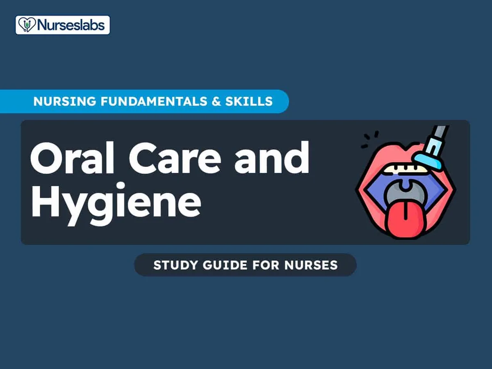

Expanded Nursing Uganda Explanation
Oral care/mouth care should be understood beyond a short definition. Link the concept to patient history, focused assessment, common risks, nursing priorities, documentation and evaluation of outcomes.
01 Carry out bed bath (PEX 1.6.1)
BED BATH Is bathing of a patient who is confined to bed and cannot or has no capability of self bathing.
Purpose:
- To cleanse the body off dirt, debris and perspiration (sweating) and toxic substances.
- To refresh (relieve fatigue) and provide tactile stimulation.
- To stimulate circulation .
- To provide comfort and relaxation .
- To enhance self-concept (self esteem)
- To regulate body temperature .
- To induce sleep .
- To prevent bed/pressure sores by minimizing skin irritation.
- To give health instruction to the patient.
- To prevent contracture by giving exercise-stretching of body muscles.
Types of patients needing a bed bath:
- Unconscious or semi-conscious patients.
- Post-operative patients
- Patients with strict bed rest.
- Paraplegic patients
- Orthopedic patients in plaster cast and traction
- Seriously ill patients
Types of cleansing bath:
- Bed bath ; it is the bathing of a patient who is confined to bed.
- Therapeutic bath ; doctor specifies the temperature of the water, medications to be added and the body part is to be treated.
- Partial bath ; it is the act of cleaning particular areas in the body for example face, axilla, genitalia, upper and lower limbs.
- Self-administered bath ; this is the same as in bed bath except the patient is assisting in taking the bath.
- Tub bath or bathroom bath ; this bath is allowed to the patient only if h/she has enough confidence for self help and is able to withstand the procedure.
Factors Affecting the Skin (Relevance to hygiene and pressure areas)
- Impaired self care
- Immobilization
- Exposure to pressure and moisture
- Vascular insufficiency
- Reduced sensation
- Nutritional alterations
- Constrictive external device
Equipment for bed bath:
Top shelf:
- Basin
- 2 large jugs (1 for hot water, 2 nd for cold water)
- 2 flannels (wash cloth)
- Soap in soap dish
- Nail brush and razor blade/nail cutter
- Tooth brush/stick and tooth paste
- Mug of clean water and receiver
- Face towel
- Comb and oil/Vaseline
- Tray of pressure areas
- Bowl of swabs or toilet paper
- Bath thermometer
Bottom shelf:
- 2 bath towels
- Clean bed linen
- Clean patient’s gown/dress (depend on the sex)
- Draw mackintosh and towel
- Receiver for used swabs
- Pail or bucket for dirty water
- Gloves
- Nurse’s apron
At the bedside:
- Bedpan or + urinal with cover
- Soiled linen container
- Screens
Procedure:
- Collect all the equipment needed always before beginning the procedure
- Explain the procedure to the patient
- Maintain the privacy of the patient by screening and closing the adjacent windows; and to prevent draught.
- Give the patient a bedpan or urinal if required
- Remove the top bed clothes and pillows, except the sheet and one pillow to maintain the position.
- Remove the gown, wash and dry each part separately uncovering only the part to be washed.
- Mix hot and cold water in a basin half full and check the temperature using the back of the hand or bath thermometer (temperature should be 110°F to 115°F)
- Spread the face towel around the neck. Wet the sponge towel/flannels and remove excessive water then clean the body in the following order;
Face:
- Wash the forehead, face, over and behind the ears and neck.
- Clean the eyes from inner to outer end. Rinse the sponge towel and wipe the face.
- Dry with the face towel thoroughly well to prevent chills.
Arms:
- Place the towel lengthwise under the furthest arm. If there is I.V line do not disturb it.
- Take soapy sponge and soap the arm and axilla.
- Massage the pressure areas.
- Rinse and dry well, paying attention to the skin under the breast.
- Cover the finished parts to prevent draught.
Chest:
- Expose only the part to be washed.
- Wet and apply soap to the chest in rotator movement, paying attention to skin creases (folds)
- Remove soap thoroughly by wiping from neck to chest and dry with a bath towel.
Abdomen:
- Fold the top sheet to the suprapubic region and cover the chest with a bath towel.
- Wet and clean the abdomen with soap.
- Clean the umbilicus and dry it with a bath towel.
- Cover the patient with the top sheet and remove the towel.
Back:
- Turn the patient on side or lateral position close to the edge of the bed, with the back towards the nurse.
- Expose the back and buttocks; spread the bath towel on the bed, close to the patient’s back.
- Wet the area and apply soap with rotator movements, clean and remove soap and dry the area.
- Treat pressure areas.
- Straighten the under bed linen and in-put clean linen and mackintosh if necessary.
- Help the patient to return to supine position.
Legs:
- Uncover the furthest leg 1 st and place a towel and mackintosh under the leg.
- Apply soap to the leg and make sure to give special attention to the groin.
- Treat pressure areas/points.
- Place the foot in the basin to wash.
- Rinse and dry well, paying special attention in between the toes.
- Repeat the procedure on the next/other leg.
Pubic region:
- Clean the pubic region with swabs or toilet paper (for helpless patient), if able permit the patient to clean by him/herself.
- Give perineal care and dry the perineum thoroughly well, apply Vaseline to provide comfort.
- Clean the mouth if the patient is unable to do it. If able give a stick or tooth brush with tooth paste and mug of water. Hold the receiver for the patient.
- Cut the nails if necessary and comb the hair.
- Make the bed and leave the patient comfortable.
- Clear away and wash hands.
- Record the procedure and report any abnormality seen on the patient to the nurse in-charge.
02 Baby Bath
BABY BATH Is the washing of the baby’s body to maintain its hygiene. The nurse/midwife helps the parents in bathing the baby and teaches them to do it, highlighting on infant’s reaction to various stages of bathing.
Purpose:
- To maintain the baby’s hygiene .
- To teach the mother (parents) or care-takers on how to bath the baby.
Requirements:
Top shelf:
- 2 jugs (1 with hot water and 2 nd with cold water)
- Baby’s soap in a soap dish
- Galipot of sterile swabs
- Normal saline
- Bath thermometer
- Temperature tray (containing; galipot of swabs, thermometer, galipot of solution/disinfectant, TPR chart and pen plus second hand ticker watch)
- Tray for cord care (galipot of swabs, cord scissors in a receiver, N/S, cord ligature, 2 receivers: - for used swabs and used instruments)
- A pair of sterile gloves
Bottom shelf:
- Receiver for used swabs
- Plastic apron for the nurse/midwife
- Clean baby clothes
- Two baby towels (bath towels)
- Napkins/diapers
- Draw mackintosh and towel
- Barrier cream and powder if necessary
- Weighing scale
On the stool or table:
- Basin
On the floor next to the bath area:
- 2 pails (for soiled clothing and soiled napkins)
- If diapers, a large receiver is required
NB. The requirements can be laid on a trolley or a table. The nurse/midwife may bath the baby while; sitting on a low stool or chair with the baby on his/her laps. Or Standing with the baby on the table.
Procedure:
- Prepare/collect the necessary equipment.
- Arrange the equipment on the trolley or the table for easy reach.
- Explain the procedure to the parent(s) or care-taker.
- Provide privacy by closing nearby/adjacent windows and doors in the vicinity of the bath.
- Put on the apron and wash hands.
- Check the baby’s temperature and record on the chart.
- Put cold then hot water in the basin.
- Test the temperature with bath thermometer if available (T° 37-38°C) or test using the elbow, it should feel warm not hot, if no thermometer is available.
- Undress the baby leaving the napkin on or diaper if dry.
- Weigh the baby
- Wrap the baby firmly in a towel leaving the head exposed.
- Put dirty linen/clothes and napkins in a bucket respectively.
- Hold the baby firmly under the left arm supporting the head with left hand.
- Lower the head over the basin and wash face using clear clean water without soap.
- Clean the eyes and ears with cotton swabs and water. If there is a discharge, use normal saline to clean them using a swab once working from inside outwards for each eye or ear.
- Discard the used swabs in the receiver.
- Dry the face with a towel.
- With the right hand, using soap/baby shampoo, make lather/foam and apply to the baby’s head. Massage gently and then rinse off the foam thoroughly taking care not to splash water in the baby’s face.
- Dry the baby’s head with bath towel.
- Unwrap the baby and remove the napkin or diaper and clean the buttocks with a swab if necessary.
- Hold the baby across your lap with the left hand holding firmly while grasping the shoulder around the axilla/armpit at the same time supporting the head.
- Soap the baby’s body, arms and legs, taking care on the skin folds. Turn the baby and soap the back and in between the buttocks.
- As the skin is now slippery, great care should be taken in handling the baby. Hold the baby firmly with the left hand under the right axilla and the right hand supporting the buttocks and grasping the left thigh (legs), with the baby’s head resting or supported by the nurse’s left arm, then gently lower the baby into the basin.
- While continuing to support the baby with left hand, using the right hand to rinse the baby thoroughly well paying attention on skin folds, in between the buttocks and groins.
- Place the bath towel neatly over the laps or on the table and lift the baby onto it. Wrap the baby well to prevent from getting cold.
- Dry gently and thoroughly seeing that all skin folds e.g. fingers, arms, neck, axial, groin, in between the buttocks are dry.
- When the skin is dry, apply barrier cream e.g. petroleum jelly to the whole body. If necessary apply powder at the groins and in between the buttocks.
- Clean the umbilical cord stamp with normal saline and shorten the ligatures if necessary.
- Dress the baby in clean napkin/diapers and clothes, keeping the baby warm.
- Discard the towel in the bucket
- Give baby to the mother to feed before taking him/her to sleep.
- Clear away the used articles.
- Document the bath, family participation, condition of the baby, urine and bowel movement and report any abnormalities noted during the procedure e.g. bruises, rashes, excoriation (peeling of the skin)
General Rules (Baby Bath):
- Safety should be observed by keeping the baby warm, lying in safe place.
- Prevent falls , burns and aspiration of water.
- Before bathing the baby, assess the family’s preference and home practices .
- Allow parents to make their own decisions as much as possible and retain control.
- Baby should be bathed prior feeding to reduce the risk of vomiting and aspiration.
- Bathing should be postponed in cold weather unless the room is heated.
- Powder is not recommended on baby’s skin especially when broken.
03 Carry out oral care/mouth care (PEX 1.6.2)
MOUTH CARE/ORAL HYGIENE Mouth care is the maintenance in the cleanliness of the mouth. It is important because the mouth is the portal entry of food and digestion starts from the mouth and the entry of any pathogen in the mouth directly affects the health of the person.
Purpose:
- To maintain oral hygiene among bedridden patients.
- To prevent and treat mouth infections .
- To keep the mouth fresh and clean .
- To prevent dental carries and tooth decay .
- To prevent the mucous membrane from becoming dry and cracked , hence keeping mouth moist.
- To prevent sordes and sores which result into ulceration.
- To prevent infection of parotid glands .
- To stimulate salivation and increase appetite .
- To prevent complications such as stomatitis, glossitis, pyorrhea, parotitis etc.
- To stimulate circulation in the gums thus maintaining healthy teeth.
- To remove food debris
- To prevent halitosis .
- To create a feeling of general well being .
Patients who require frequent mouth care:
- Unconscious, semi-conscious patients
- Helpless or very ill patients
- Patient with higher body temperature/high fevers
- Malnourished and dehydrated patients
- Patients having local diseases of the mouth
- Paraplegic patients
- Post-operative patients
Solutions commonly used for mouth wash:
- Potassium permanganate (KMNO 4 ); 1 crystal to a glass of water
- Sodium chloride; 1 teaspoon to a pint of water
- Potassium chloride; 4 to 6 percent
- Hydrogen peroxide (H 2 O 2 ); 1:8 solution
Dentifrices used:
- Glycerin with lime juice; equal parts
- Sodium bicarbonate paste
- Reliable tooth paste or powder
Emollient/lubricant commonly used:
- Cream or butter
- White Vaseline
- Liquid paraffin
- Glycerin borax
- Olive oil
Requirements for mouth care: A tray containing;
- Mackintosh and towel
- Small jug/glass of warm water
- Patient’s towel to protect the patient
- Two receivers; for waste water and used swabs
- Paper bag if a second receiver is not available
- A bowl for dentures if necessary
- A galipot with moistener/lubricant
- A galipot with swabs
- A galipot of sodium bicarbonate solution; 5g in ½ liter of water
- Kidney dish containing; a pair of artery forceps, anon-toothed dissecting forceps, mouth gag, tongue depressor.
- Face towel
- Galipot of gauze
- A towel to cover the tray
N.B: If the patient can clean his/her own tooth brush and paste or the nurse may give him or her a soft stick /tooth brush with tooth paste to clean his/her teeth and a glass of warm normal saline to gargle with or plain clean water.
Procedure:
- Collect the equipment required and bring to the bedside of the patient.
- Explain the procedure to the patient.
- Position the patient and protect his clothes with the patient’s towel.
- Place the small mackintosh with a towel underneath the patient’s chin to protect the bed (if on lying down position)
- Position the pillow according to comfort of the patient.
- Wash hands and remove patient’s dentures if any, keep safely.
- Inspect the mouth, note and report any abnormality detected.
- Pour antiseptic solution into the galipot.
- Soak the swab in solution and squeeze out excess solution by using artery clamp or press against the side of the galipot to prevent dripping.
- Clean using up and down movements from gums to crown, clean oral cavity (inside of cheeks) from proximal to distal, outer and inner aspect of the teeth and clean the tongue gently from inner to outer aspect, avoid touching the palate which may make the patient feel sick and want to vomit.
- Change swabs as often as needed and discard used swabs into the receiver or paper bag.
- Give the patient a glass of water if he can rinse his mouth. Instruct him to gargle and spill it to the receiver. If not able cleanse the mouth till it’s thoroughly clean.
- Dry the face using a face towel.
- Wipe the lips with dabbing movements and apply a lubricant using gauze.
- Leave the patient comfortable, clean and replace the equipment to the storage place.
- Wash hands
- Document the time, solution used, date, condition of oral cavity, abnormalities noticed and patient’s condition to the chart and give/inform the findings to the nurse in-charge or physician.
04 Mouth Irrigation
MOUTH IRRIGATION It is the washing out or removal of plaque or food debris in between the teeth using streams of pulsating water jets.
Indications:
- Fractures of the jaw in conscious patients only
- Bleeding tooth sockets
- Food debris
Requirements: Tray
- Jug of lotion (1/2 - 1 litre) sodium bicarbonate
- Large syringe (10-20ml)
- Fine catheter in a kidney dish
- Galipot of swabs or tissues (hand wipes/tissue)
- Receiver for used lotion
- Mackintosh and towel
- Lotion thermometer
- Gloves
Procedure:
- Collect the equipment needed.
- Explain the procedure to the patient.
- Provide privacy to the patient.
- Position the patient in a comfortable position (sit the patient up if possible or turn onto the side).
- Wash hands and put on gloves.
- Place the mackintosh and towel around the neck.
- Draw up the lotion in the syringe and connect to the catheter.
- Place the end of the catheter into the patient’s mouth and ask him/her to hold it about 1” from the mouth.
- Hold the end of the catheter close to the syringe and inject the lotion slowly into the mouth.
- Pinch the catheter between the finger, disconnect the syringe and refill it.
- Reconnect the syringe and inject the lotion as before.
- Remove the catheter and the syringe and place in the receiver and ask the patient to rinse the lotion around the mouth.
- Hold the second receiver under the chin and ask the patient to spit the lotion into it.
- Repeat the procedure until the mouth is clean.
- On completion, make the patient comfortable, dry around the mouth with the tissue/swabs and smear a little moistener on the lips.
- Clear away and wash hands.
- Report and record the procedure and findings.
05 Nursing Uganda Clinical Lens
Use Bed bath as a practical nursing topic, not only a memorized definition. Translate theory into safe decisions, accountability, communication and service improvement.
- What to understand first: define bed bath, identify the normal or expected pattern, then explain what changes when the patient is unwell.
- Why it matters in care: the nurse must recognize risk early, explain findings clearly, document accurately and know when to escalate.
- How to revise it: connect each point to assessment, nursing diagnosis or care problem, intervention, rationale and evaluation.
06 Assessment Guide
- The problem, stakeholders, available resources, policy requirements and ethical issues.
- Risks to patients, staff, confidentiality, quality, costs and continuity.
- Documentation, reporting lines, supervision and evaluation measures.
07 Nursing Priorities, Rationales and Outcomes
- Use evidence, policy and professional standards to guide action.
- Communicate clearly, document decisions and protect confidentiality.
- Evaluate whether the action improves safety, learning or service delivery.
The rationale for these priorities is patient safety: nursing actions should prevent deterioration, reduce discomfort, support recovery and create clear evidence for the next caregiver.
- Expected outcome: The plan is documented, realistic, ethical and improves patient care or learning outcomes.
08 Patient Teaching and Revision Check
- Explain bed bath in simple language the patient or caregiver can repeat back.
- Teach warning signs, medicine or follow-up instructions, hygiene or lifestyle points where relevant.
- For exams, prepare a short answer using: definition, causes or risk factors, signs, assessment, management, complications and prevention.
- For ward practice, document baseline findings, actions taken, patient response and the plan for review.
Illustrations and Diagrams (1)

Related Video Lectures
Watch nursing lecture videos on YouTube for this topic. Opens in a new tab.
Watch on YouTubeExternal link: YouTube may use its own cookies and terms. Nursing Uganda is not affiliated with YouTube.